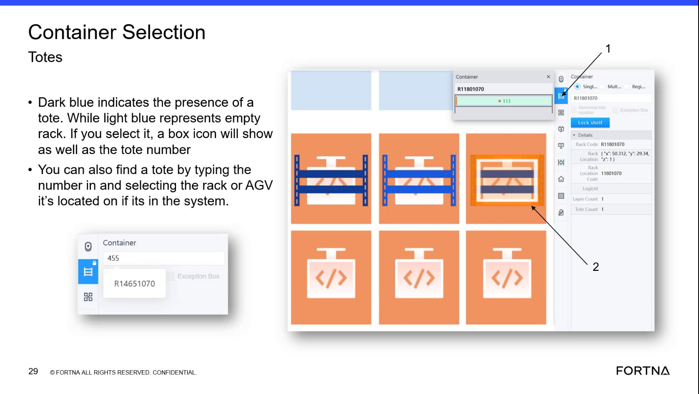

| Procedure ID | proc_direct_customer_to_preferred_interfaces_instead_of_performing_removal_in_geek_v1 |
|---|---|
| Title | Direct Customer To Preferred Interfaces Instead Of Performing Removal In Geek |
| Procedure Type | operation |
| Primary Role | L1_support |
| Support Safe | Yes |
| Validation Status | needs_sme_review |
| Merge Status | source_finalized |
When a customer needs a removal-related action, direct the customer to use AVEVA or the host/hospital interface instead of performing the removal directly in Geek. The source states that removing a box in Geek does not send all the information.
Use this guidance when handling a customer discussion or request involving a removal-related action and the action is being considered directly in Geek.
Responsible role: L1_support
Instruction:
During the customer discussion, confirm whether the requested removal-related action is being considered directly in Geek.
Expected result:
It is clear whether the action is being considered in Geek.
Screens / Images:

Stop or Escalate If:
Responsible role: L1_support
Instruction:
Direct the customer to use AVEVA or the host/hospital interface instead of performing the removal directly in Geek.
Expected result:
The customer is redirected to one of the preferred interfaces named in the source.
Screens / Images:
Stop or Escalate If:
Responsible role: L1_support
Instruction:
Explain that removing a box in Geek does not send all the information.
Expected result:
The customer receives the source-supported reason for using the preferred interface.
Stop or Escalate If:
Responsible role: L1_support
Instruction:
Record that the customer was directed to the preferred interface named in the source.
Expected result:
A record exists that the customer was directed to AVEVA or the host/hospital interface.